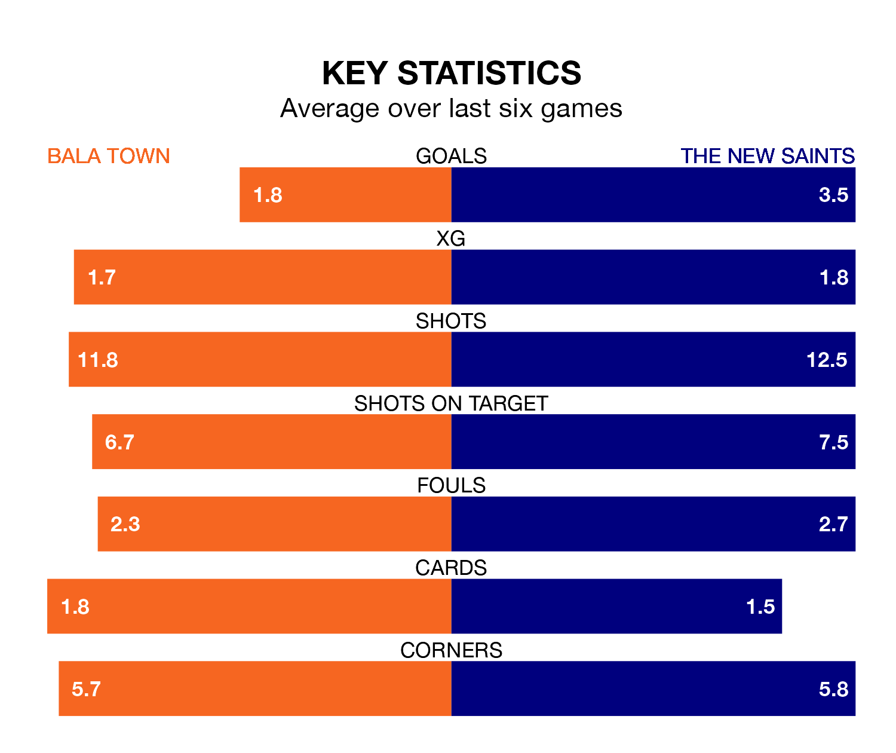

Two of the Welsh Premier League's top sides face each other at Maes Tegid in Friday's late kick-off, when third-placed Bala Town host table-topping The New Saints.
Bala have picked up 10 wins and eight draws from 23 games so far this season, and sit 27 points below the visitors going into the 7.45pm match.
The Saints, meanwhile, have won 21 and drawn two, picking up 65 points.
With 80 goals in 23 games so far this season, The New Saints are the league's highest scorers with 3.5 goals per game. And they are conceding fewer than average, letting in 14 goals at a rate of 0.6 per game.
Bala, meanwhile, are below average scorers, with 1.1 goals per game, compared to a league average of 1.5. They have conceded 0.9 goals per game.
Town are in good form in the Welsh Premier League, with four wins and a draw from their last six games.
With six wins and no losses over that period, the Saints' form is better – they have taken 18 points from 18, compared to the Lakesiders' 13.
In the last 10 years, Bala and The New Saints have played each other on 38 occasions. Bala won one of them, The New Saints 26, and they drew 11 times.
On average, the Lakesiders scored 0.6 goals and the Saints 2.3 in those matches.
Their last meeting was on October 28, when The New Saints won 2-0 at home.
Bala's last match was on Saturday, a 1-1 draw against Cardiff Met, with George Stephen Newell getting the goal for the Lakesiders.
The New Saints beat Newtown 3-0 last time out, on Tuesday, with Declan McManus (two) and Ben Clark on the scoresheet.
Updated: 11:18 (UTC), 08/02/24